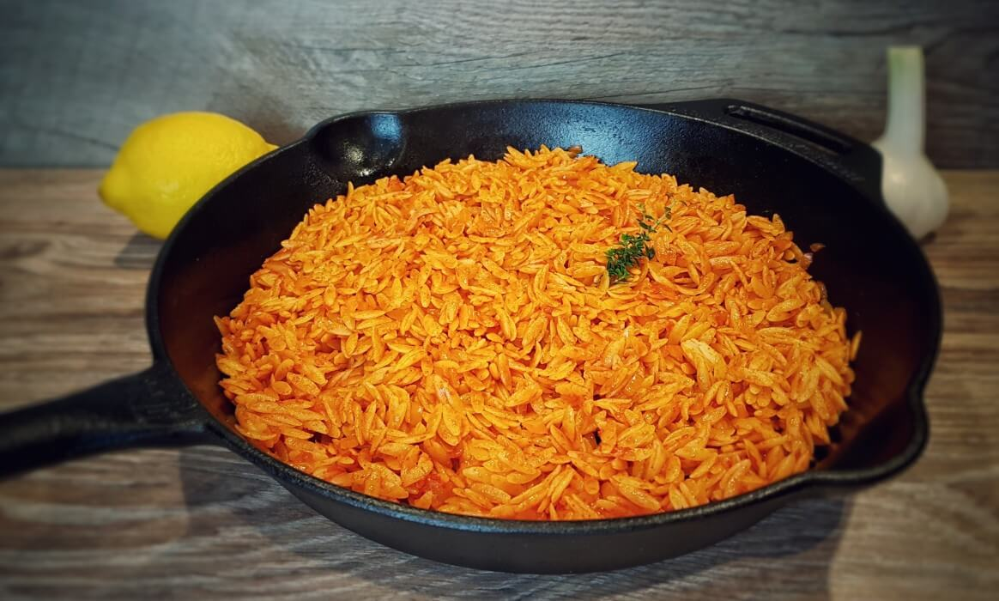

Kritharaki

DESCRIPTION
Kritharaki is a carb, but one of my favorite carbs. Simple recipe, cooked in tomato juice with some magghi/knorr and in a not too dried not too soup-like texture.
INGREDIENTS
- 1 cup Kritharaki (orzo)
- 100gr Tomato Juice
- Juice from one grated tomato
- 1 magghi/knorr
- 2 cups water
- 3 tbsp olive oil
STEPS
- Put a big katsarola on high heat.
- Add olive oil, tomato juice, grated tomato and magghi.
- Once heated up, add the kritharaki.
- Stir it a bit and once kritharaki is sizzling, lower the heat a bit.
- Add water and keep stirring every 2-3 minutes, as kritharaki will stick otherwise.
- After 15-20 mins, lower heat and let it 'drink' most of the water.
- Remove from heat and leave it 5 more minutes. Then serve with grated halloumi and/or greek yoghurt. Goes well with meat.